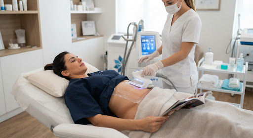

A criolipólise usa temperatura controlada para cristalizar e eliminar definitivamente as células de gordura — de forma não invasiva, indolor e com resultados duradouros.
As células de gordura (adipócitos) são mais sensíveis ao frio do que as demais células do corpo. Quando expostas a temperaturas entre -5°C e -10°C, sofrem apoptose (morte celular programada) sem danos aos tecidos ao redor.
No período de 4 a 12 semanas após o tratamento, o organismo elimina naturalmente essas células destruídas pelo sistema linfático. O resultado é uma redução permanente da camada de gordura na área tratada.

Zero cortes, zero agulhas, zero anestesia. O aplicador é posicionado sobre a pele e trabalha externamente — você pode ler, usar o celular ou relaxar durante a sessão.
As células de gordura destruídas não voltam. Com manutenção do peso, o resultado é permanente — diferente de dietas que reduzem o volume mas mantêm o número de células.
Você sai da sessão e vai trabalhar, fazer exercícios, tudo normalmente. Pode haver leve vermelhidão por algumas horas — nada que impeça sua rotina.
Estudos clínicos mostram redução de 20 a 25% da espessura da gordura na área tratada por sessão — resultados visíveis e mensuráveis.
Abdômen, flancos, culote, interno de coxas, braços, costas, joelhos e papada. Aplicadores de diferentes tamanhos para cada região.
Tecnologia com mais de uma década de estudos clínicos, com ampla comprovação de segurança e eficácia para tratamento de gordura localizada.
A especialista avalia as áreas de gordura localizada, mede e fotodocumenta. Definimos o número de aplicadores e o protocolo ideal para o seu caso.
Um gel protetor é aplicado na pele. O aplicador suga suavemente a gordura para dentro do painel de resfriamento — a sensação inicial é de frio e pressão, que desaparece em minutos.
O equipamento mantém a temperatura controlada enquanto você relaxa. Cada aplicador trata uma área por sessão. Múltiplas áreas podem ser tratadas no mesmo dia.
Ao final, realizamos massagem na área para acelerar o processo de eliminação das células. Os resultados aparecem gradualmente entre a 4ª e 12ª semana após a sessão.
Para gorduras moderadas, muitas pacientes obtêm ótimos resultados com 1 a 2 sessões por área. Para gorduras mais volumosas, podem ser necessárias 3 sessões com intervalo de 30 a 45 dias entre elas. A avaliação individual determina o protocolo.
Os primeiros resultados aparecem entre a 4ª e a 8ª semana. O resultado completo é observado entre 8 e 12 semanas após a sessão, quando o organismo termina de elimininas as células destruídas. É gradual e natural — sem aspecto artificial.
Não. A criolipólise é indicada para gordura localizada — aquela que persiste mesmo com dieta e exercício. Não é um tratamento para obesidade e não substitui atividade física. O candidato ideal está no peso ou próximo dele e tem áreas específicas de gordura que não respondem ao exercício.
Agende sua avaliação gratuita. Nossa especialista avalia suas áreas de interesse e determina se a criolipólise é indicada para você.
Agendar minha avaliação gratuita